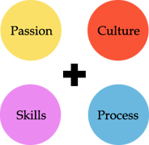
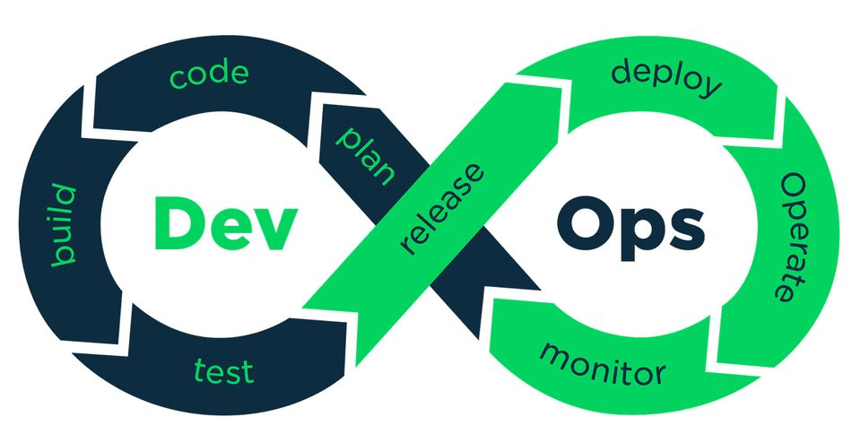

|
Cyber Software Bangladesh Limited is a CMMi Level 3 appraised software development company, based in Dhaka-Bangladesh, specializes in desktop, mobile and web-based solutions for large, medium and small enterprises. We’ve developed our capacity to support our clients in outsourcing of ICT needs. Cyber Software is recognized for its excellence in key technologies, testing and efficient project management We work in mission critical environments with large volumes of sensitive data, so our highly experienced team strives to reduce risk, improve performance and promote sustainable business. Government and state agencies rely on us in designing and implementing end-to-end ID management solutions. We bring innovation not only in our technologies but also in the way we manage our projects and deliver our solutions. Our expertise in consultancy, project management, training and support combined with our relentless quest for customer satisfaction through on-time, on-budget and on-spec delivery of complex turnkey solutions, has earned Cyber Software an enviable reputation in the industry. |
|
|  | |
PASSIONWe just love software development - it's as simple as that. That love brings in the passion to create something amazing. And the passion gives us the energy that drives us. CULTUREWe are not just a place where software gets made. We see our space as a place for solving problems, for fun and creativity, for crafting things that are as simple to use as they are beautiful to look at. Our culture is open and without hierarchy. SKILLSOur technical team represents more than 10 years of software development experience. We are a very mixed group with expertise ranging from device driver developments to style sheets. On the technology preference front we are equally varied, revolving our lives from Java to .NET to objective C to C++ with occasional dips into something more unusual like erlang or sleeping! PROCESSWe are great believers of the Agile methodology in software development. Everything is bound to change and we are prepared for that change. We love to develop in small steps - giving our customers something to look at and give us feedback in at every stage. |
|